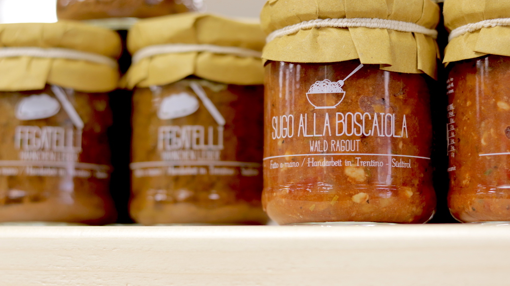

Prodotti Gastronomici
Il supermercato dispone di una vasta gamma di prodotti alimentari e per la pulizia della casa. Il banco gastronomia offre la possibilità di ordinare panini e taglieri con prodotti tipici del territorio che possono essere consumati anche all'interno del locale o nel giardino esterno. Sono infatti disponibili tavoli e posti a sedere dove poter prendere un caffè o una bibita godendo della meravigliosa vista delle montagne circostanti.

Oltre alla sopressa da noi prodotta vi è una vasta scelta di salumi prodotti dall'azienda Brunello

Frutta e verdura a km zero sono forniti dall'azienda agricola Daniele Brunello di Malo (VI).
Il pastificio Bassani fornisce il tortello con un ripieno creato appositamente per Aste Market: sopressa, cipollotto e fonduta di Asiago.
Uno dei prodotti di alta qualità presente sugli scaffali è la pasta sgambaro: prodotta con grano italiano al 100% utilizzando metodi di produzione ecosostenibili.
Per condire la pasta i prodotti di Alpe Magna: da più di 65 anni la famiglia Simonetto di Trento porta in tavola sughi e salse fatti a mano.
Tra i vini sono presenti quelli prodotti dall'azienda Zio Porco Wines i cui vigneti si trovano presso la zona del bassanese. Porseo è un bianco IGT da uve Garganega, Vespaiolo e Sauvignon. Porcosporco un rosato IGT da uve Marzemino Nero e Pinot Nero.
Servizi
Un ampio parcheggio è disponibile per chi volesse lasciare l'auto durante la giornata per intraprendere uno dei tanti percorsi pedonali o ciclabili presenti nella zona.
Aste Market fornisce anche un servizio noleggio bici giornaliero per chi volesse trascorrere un paio d'ore o l'intera giornata pedalando nei dintorni di Valli del Pasubio.